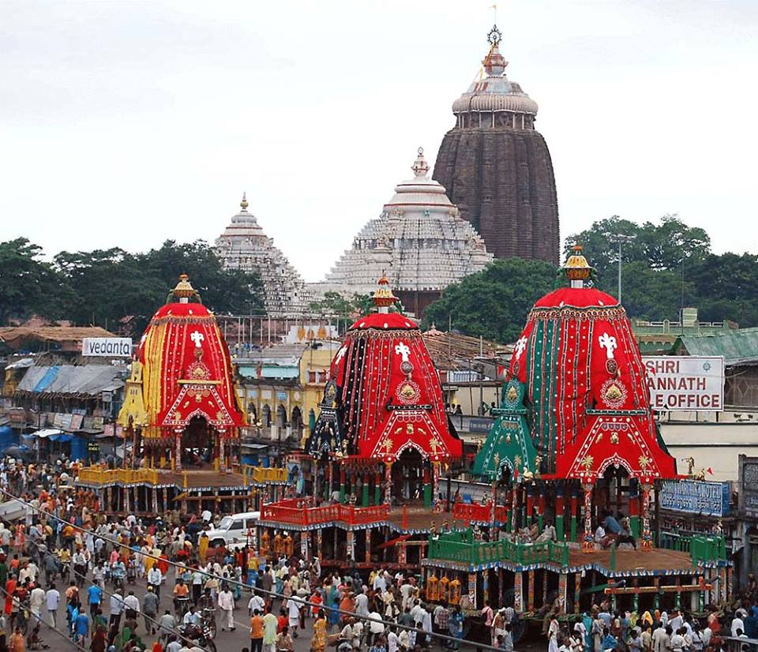
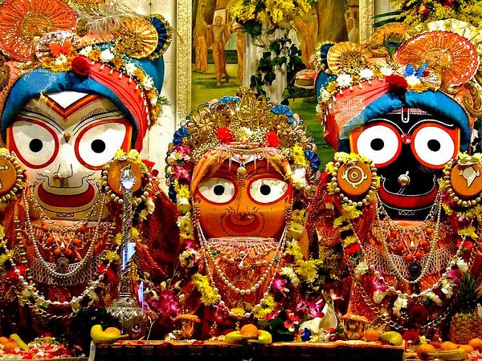
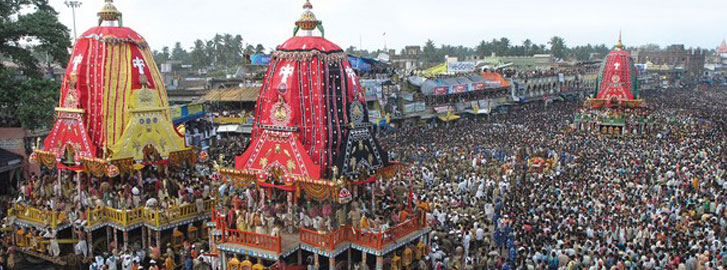

Ratha Yatra also referred to as Rathayatra, Rathjatra or Chariot festival is any public procession in a chariot.The term particularly refers to the annual Rathayatra in Odisha,Jharkhand and other East Indian states , particularly the Odia festival thatnvolve a public procession with a chariot with deities Jagannath (Vishnu avatar),Balabhadra (his brother), Subhadra (his sister) and Sudarshana Chakra (his weapon)on a ratha, a wooden deula-shaped chariot. It attracts over a million Hindu pilgrims who join the procession each year.Rathayatra processions have been historically common in Vishnu-related (Jagannath, Rama, Krishna) traditions in Hinduism across India, in Shiva-related traditions, saints and goddesses in Nepal, with Tirthankaras in Jainism, as well as tribal folk religions found in the eastern states of India. Notable ratha yatras in India include the Ratha yatra of Puri, the Dhamrai Ratha Yatra and the Ratha Yatra of Mahesh. Hindu communities outside India, such as in Singapore, celerate Rathayatrah as those associated with Jagannath, Krishna, Shiva and Mariamman.According to Knut Jacobsen, a Rathayatra has religious origins and meaning, but the events have a major community heritage, social sharing and cultural significance to the organizers and participants
|  |  |  |